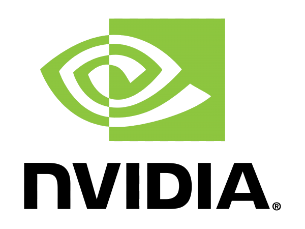
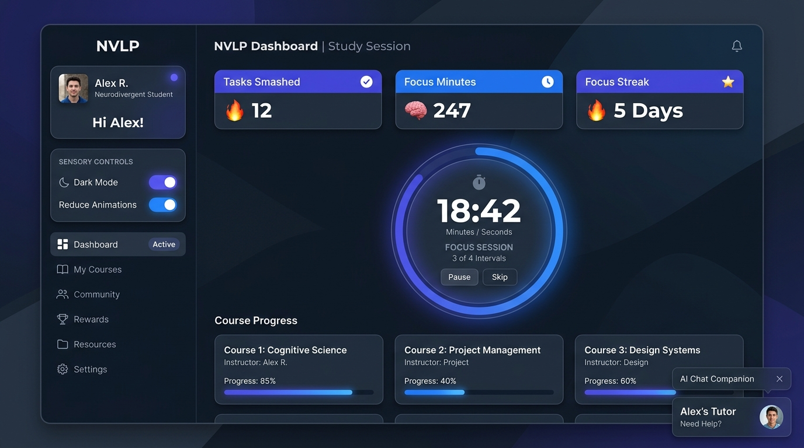

IT Specialist · Social Security Administration
Torren
Moore Jr.
I've spent the last decade keeping essential operations running: supply and inventory at sea, IT for a university campus, and now the software behind America's social safety net.
About
I'm a Navy veteran and federal software developer based in the DMV, working in the Social Security Administration's Office of the Chief Information Officer. My path started in shipboard supply, where six years of inventory management taught me that reliable systems come down to the people who keep them honest.
After the Navy I moved into civilian IT and worked my way up from intern to lead IT specialist at ECPI University, finishing a cybersecurity degree and an MBA there along the way. I'm Security+ certified, and my focus today is application security and DevSecOps: building software that protects the benefits millions of Americans rely on.
Experience
-
2015 – 2021
United States Navy
Supply & Inventory Management
Managed shipboard storerooms and inventory across six years of honorable service. Coordinated the movement of material between ships and from pier to storeroom, keeping accurate custody of everything the crew depended on.
-
2021 – 2022
Veteran Reporters
IT Specialist
First civilian IT role. Installed, configured, and maintained workstation software, hardware, printers, and phones. Handled system and network administration, application upgrades, performance troubleshooting, and daily backup and recovery procedures.
-
2022 – 2026
ECPI University
IT Specialist, Intern to Lead
Four years of front-line IT for a busy campus, promoted from intern to specialist to lead. Resolved help desk tickets end to end, imaged and deployed roughly 300 PCs campus-wide, and administered Cisco Meraki networking. All while completing two degrees at the same institution.
-
2026 – Present
Social Security Administration
IT Specialist (APPSW)
Software development for digital identity, authentication, and anti-fraud capabilities protecting SSA benefits and services. Office of the Chief Information Officer, Digital Customer Solutions.
Education & Certifications
2021 – 2024
B.S. Computer & Information Science
Cybersecurity · ECPI University
2024 – 2025
Master of Business Administration
Business Management · ECPI University
2026 – 2027
B.S. Computer & Information Science
Software Development · ECPI University
In progress
June 2026
CompTIA Security+
Certified
2021
Google IT Support Certificate
April 2025
Fundamentals of Deep Learning

Certificate · NVIDIA
Projects

In DevelopmentNVLP — Neurodivergent Virtual Learning Platform
A full-stack adaptive learning platform built for neurodivergent students. Features AI study companions (LUCAS & DANI) powered by GPT-4o, a clinical adaptive rules engine with 47 neuro-adaptive triggers, real-time sensory controls, a Pomodoro-based Focus Engine, executive function tooling, and a Calm Room for self-regulation — all engineered around accessibility and cognitive load management.
Contact
Let's talk.
Open to conversations about federal IT, security, and where the two meet.